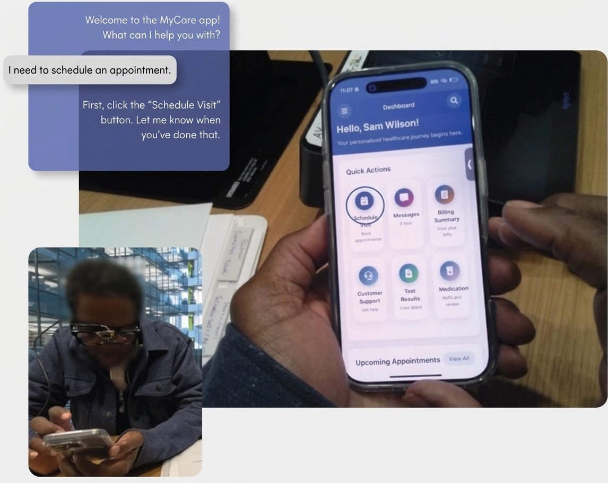

As a Project Manager at the Human-Centered Computing Lab at Olin College, I led a multidisciplinary student research team collaborating directly with local older adults to examine friction points in digital healthcare portals.
Through contextual inquiry sessions and iterative co-design workshops, we synthesized empirical findings into system requirements for AI Sidekick—a wearable multimodal assistant that pairs ambient audio guidance with step-by-step interface scaffolding without eroding user autonomy.
Our technical paper, “Should I Use This or My Mind?”: Designing a Wearable Multimodal Tech Assistant for Older Adults Navigating Patient Portals, was accepted to ACM ASSETS 2026.
Contextual Inquiry & Portal Friction
We began by observing how older adults at a local senior center navigate real-world clinical portals to check lab results, refill prescriptions, and message providers.
Rather than struggling with basic device literacy, participants ran into nested clinical jargon, multi-step authentication loops, and dense interfaces designed without cognitive scaffolding.
Participatory Co-Design & The Autonomy Tension
In iterative co-design workshops using wearable smart glasses, our early prototypes assumed users wanted the assistant to automate portal actions end-to-end.
Participants pushed back immediately—asking whether relying on an automated agent would erode their own agency and memory over time.
“Should I use this or my mind?” — Co-design participant reflecting on when AI assistance supports independence versus replacing it.
Multimodal Scaffolding Architecture
We translated those synthesis themes into a stepped, user-paced multimodal architecture: ambient audio explanations paired with glanceable visual cues that orient the user while keeping every clinical decision firmly in their hands.
Visual Documentation & Artifacts
